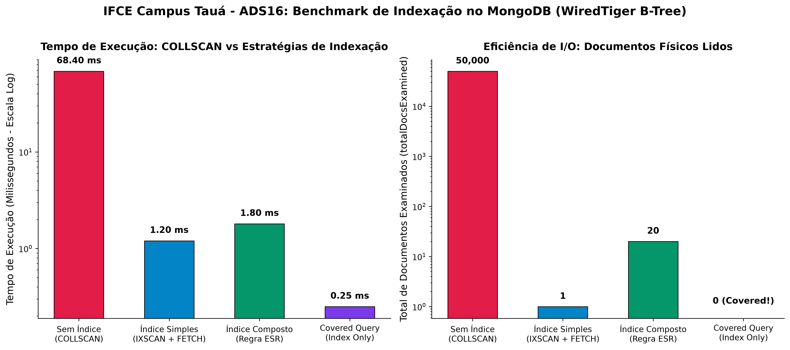

Operador $elemMatch: Eliminando Falsos Positivos em Listas
Quando filtramos arrays com múltiplos critérios, o MongoDB pode casar itens diferentes se não usarmos $elemMatch.
Abordagem Incorreta (Falso Positivo)
// Atende se ITEM 1 satisfaz preco > 100
// E ITEM 2 satisfaz qtd >= 5 (Itens distintos!)
db.pedidos.find({
"itens.preco": { $gt: 100 },
"itens.qtd": { $gte: 5 }
})
Abordagem Correta com $elemMatch
// Garante que o MESMO subdocumento do array
// satisfaca ambas as condicoes!
db.pedidos.find({
itens: {
$elemMatch: {
preco: { $gt: 100 },
qtd: { $gte: 5 }
}
}
})
Operador $expr: Comparando Campos Internos
Permite usar sintaxe de agregação dentro do find() para comparar dois campos do mesmo documento:
// Produtos com estoque atual abaixo do estoque de seguranca:
db.produtos.find({
$expr: {
$lt: ["$estoque.atual", "$estoque.minimo"]
}
})
Modificação Seletiva com arrayFilters
Atualiza um elemento específico de um array sem conhecer previamente a sua posição numérica:
db.pedidos.updateOne(
{ codigo: "PED-2026-001" },
{
$set: { "itens.$[item].status": "SEPARADO" }
},
{
arrayFilters: [ { "item.sku": "PROD-TECLADO" } ]
}
)
Regra de Ouro
A Regra de Ouro ESR: Equality ➔ Sort ➔ Range
A ordem exata na criação de um índice composto determina se a consulta será respondida em $\le 1\text{ ms}$ ou se provocará erro de estouro de memória no sort em RAM (Sort exceeded memory limit).
1. [E] Equality
Campos com busca exata (status: 'ATIVO'). Devem vir em primeiro para afunilar a busca.
2. [S] Sort
Campos usados na ordenação (sort: { data: -1 }). Devem vir antes do Range para usar a ordem natural do índice!
3. [R] Range
Campos com operadores de faixa (preco: { $gte: 100 }). Devem vir por último.
Índices Simples & Multikey (Listas)
// 1. Indice Simples com Unicidade Garantida:
db.produtos.createIndex({ sku: 1 }, { unique: true })
// 2. Indice Multikey em Array de Tags:
db.produtos.createIndex({ tags: 1 })
// ATENCAO: No maximo UM array por indice composto!
// db.produtos.createIndex({ tags: 1, cores: 1 }) -> ERRO!
Otimizações de RAM: Parciais & TTL
// 1. Indice Parcial (Economiza dezenas de MBs na RAM):
db.pedidos.createIndex(
{ cliente_id: 1, data_criacao: -1 },
{ partialFilterExpression: { status: "PENDENTE" } }
)
// 2. Indice TTL (Remove sessoes apos 1 hora):
db.sessoes.createIndex(
{ data_expiracao: 1 },
{ expireAfterSeconds: 0 }
)
Diferente do $regex (que varre texto caractere por caractere sem radicalização), os índices textuais do MongoDB aplicam tokenização, remoção de stopwords (artigos e preposições) e stemming (redução da palavra ao radical).
1. Criação do Índice Textual com Pesos (Weights)
db.produtos.createIndex(
{ titulo: "text", tags: "text", descricao: "text" },
{
weights: { titulo: 10, tags: 5, descricao: 1 },
default_language: "portuguese",
name: "idx_busca_textual"
}
)
2. Consulta por Palavras e Ordenação por Escore ($meta: 'textScore')
db.produtos.find(
{ $text: { $search: "teclado ergonomico sem fio" } },
{
titulo: 1,
preco: 1,
score: { $meta: "textScore" },
_id: 0
}
).sort({ score: { $meta: "textScore" } })
Evidência Empírica de Performance (50.000 Documentos)
Medições consolidadas em laboratório: tempo de resposta (ms) e documentos lidos no disco.

As Quatro Métricas Vitais do explain("executionStats")
stage
Estágio de execução. Busque sempre IXSCAN. Evite COLLSCAN e SORT em RAM.
totalDocsExamined
Total de documentos físicos lidos do disco. Em Covered Queries, o valor ideal é rigorosamente 0.
totalKeysExamined
Nós do índice inspecionados. Deve aproximar-se do número de documentos devolvidos (nReturned).
executionTimeMillis
Tempo de execução real no motor. Deve ser $\le 1\text{ ms}$ para buscas pontuais em e-commerces.
Covered Queries (Consultas Cobertas) — totalDocsExamined = 0
Quando todos os campos requisitados na consulta e na projeção residem dentro do próprio índice, o MongoDB elimina totalmente o estágio de leitura física (FETCH). A consulta é atendida inteiramente na memória RAM!
// Indice Composto:
db.produtos.createIndex({ categoria: 1, preco: 1, sku: 1 })
// Consulta Coberta: _id: 0 eh MANDATÓRIO para eliminar o FETCH!
db.produtos.find(
{ categoria: "Informática", preco: { $lte: 2000 } },
{ categoria: 1, preco: 1, sku: 1, _id: 0 }
).explain("executionStats")